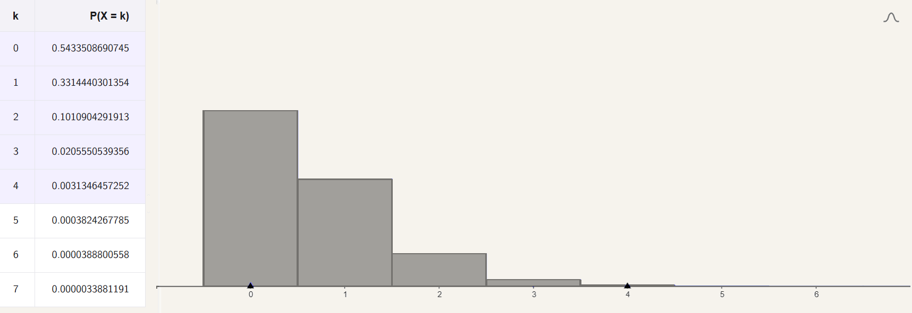

Dubbi, conti e cavalli

Ehi coso?

Ciao! Che si dice?
Hai presente la teoria della probabilità?
L’ho studiata un po’al liceo
Eeeeeee?
E mi ricordo che era una tortura assurda! Il solo pensarci mi da la nausea.
Adesso ti racconto una storia così ti passa. Una storia che insegna l’asprezza della vita, le alte finezze della matematica applicata e che i cavalli sono persone orribili (cit).
Ma stiamo ancora parlando di probabilità?
Ovvio! Allora siamo nell’Europa di fine ‘800. La guerra Franco-Prussiana è finita. Otto von Bismark ha vinto la guerra schierando uno degli eserciti più moderni ed efficienti dell’epoca. Parliamo di leva ben organizzata, un ottimo addestramento, armi moderne e di una rete ferroviaria per la gestione della logistica con i controcazzi. Ecco fa conto che tu, Fritz…
Ma non mi chiamo Fritz!
Ti chiami sicuramente Fritz se sei un soldato prussiano dell’epoca. Diciamo che hai combattuto quella guerra. Magari non come uno sfigato qualsiasi, no no sei un Dragone.
Un dragone? Ma che cavolo stai dicendo!
Tradotto vuol dire che monti un cavallo da guerra mentre maneggi una modernissima carabina a retrocarica e, non contento, hai pure la pistola… e la sciabola (primo perché metti caso che serva e secondo perché fa un sacco figo). Sei addestrato al combattimento su mezzo equino e a terra. Un ibrido fra fanteria e cavalleria. E comunque vi chiamano Dragoni. Boia quanto devi essere avanti!
In effetti sembra proprio una figata! Non capisco cosa centri la matematica ma andiamo pure avanti
Con queste premesse è evidente che hai vinto la guerra. E adesso che sei tornato a casa cosa fai? Sei un eroe di guerra, magari pure nobile (e ai nobili va sempre tutto alla grande), ti diverti tutto il giorno con i tuoi commilitoni e e magari qualche avvenente signorina è rimasta sedotta dal tuo incredibile fascino. Ecco sta andando tutto alla grande.
Sembra veramente bello essere un dragone comunque. Una volta che sei sopravvisuto alla guerra la vita va veramente alla grande.
E invece no! No perché il cavolo di esercito non ha ancora implementato i motori a combustione interna e quindi ci sono cavalli dappertutto. Lo so sembrava una cosa figa solo che in realtà non lo è per niente.
Ma a me piacciono i cavalli! Come fai a essere superfigo se non cavalchi uno stallone bianco al tramonto! Perché te la prendi con i cavalli?
Perché? Be’ perché i soldati non li ammazzavano solo le pallottole, le sciabole, le cannonate, le infezioni, il caldo, il freddo e la fame. No, no. Ci si mettono pure i cavalli. E quelli sono sempre lì anche quando le guerre e le carestie sono finite e quando dormi in un letto caldo. Sempre lì tutti i giorni. Sti ronzini. E un giorno BAM! Nessuno sa perché ma il tuo cavallo ha ben pensato di tirare un megacalcio all’indietro proprio mentre passavi tu. Ti ha centrato con lo zoccolo nella testa. Mi dispiace Fritz, ma la tua storia finisce qua. La tua come quella di altri.
Questa storia fa veramente schifo amico!
Allora te ne racconto un’altra! Lo sai cosa puoi fare nella Prussia dell’epoca per gammazzare il tempo? Occuparti della matematica degli incidenti con i cavalli
Mi sa che questa storia è ancora più deprimente della prima, sai?
Può essere. Ma come la prima è vera anche questa per cui sta a sentire. Il signor Ladislaus von Bortkiewicz (1868-1931) era un russo di origine polacca che, ovviamente, lavorò in Prussia. Il nostro cervellone ben pensò di scrivere un libro emozionante dal titolo Das Gesetz der kleinen Zahlen (la legge dei piccoli numeri). Il genio progettò di occupare il suo tempo spulciando vent’anni di scartoffie dell’esercito. Selezionò dieci reparti di cavalleria e ne studiò i rapporti degli ultimi vent’anni. Dal 1875 al 1894.
Immagino che lo pagassero per un lavoro così noioso
No, perché?
E che cosa cavolo cercava ? Come minimo il senso dell’esistenza giusto?
Lo sport consisteva nel segnasi sulla sua bella tabella tutti gli incidenti come quello del povero Fritz. Tutte le volte che ne sgamava uno faceva un salto sulla sedia tutto contento e metteva una crocetta!
Ma scusa. Quanti cavolo potevano essere i soldati uccisi da un cavallo?
Non tanti. Non è facile essere sfigati come Fritz. Ma siccome la sfiga è sempre di più di quella che ti aspetti in quei vent’anni Fritz non fu l’unico ad avere esperienze fatali con i cavalli. Sia chiaro, lui si concentrò solo sui calci. Morsi, cadute ed insulti non li conteggiò. Mise la sfiga sotto l’acuta lente della scienza.
E che cosa sarebbe riuscito a tirar fuori da tutto questo?
Dimostrò che le morti causate da calci di cavallo sono molto ben descritti dalla distribuzione di Poisson.
Eh che cavolo sarebbe?
Ottima domanda Le distribuzioni di probabilità sono delle espressioni matematiche che descrivono come le probabilità sono distribuite tra i possibili valori di una variabile casuale.
Tutto chiaro insomma
Facciamo un esempio facile. Se ho un dado a sei facce, non truccato, la probabilità di ottenere 1 è 1/6. E lo stesso vale per il 2 e gli altri numeri. Questa è una distribuzione uniforme perché i valori che posso ottenere dal lancio del dado (i numeri da 1 a 6) hanno tutti le stesse chance di venire estratti.
Ok, quindi una distribuzione mi fa capire quanto è facile che succeda qualcosa piuttosto che qualcos’altro?
Esatto! La distribuzione di Poisson però è un po’ più complicata. Guarda!
Come si legge questa roba?
λ (lambda) è il numero medio di eventi in un intervallo di tempo. Nel nostro caso è la media di persone ammazzate dal calcio di un cavallo in un anno. n invece è il numero di eventi per intervallo di tempo di cui si vuole la probabilità Pλ . E e è (anche io ho del disagio) il numero di Eulero. Esattamente come π è un numero infinito non periodico e vale 2,71828… eccetera eccetera.
Ok. Ma perché hai messo il punto esclamativo?
Si legge fattoriale. E’ un’operazione poco conosciuta ma molto semplice. Tipo 6! è uguale a 6·5·4·3·2·1 che fa 720, 3!=3·2·1 fa 6. Chiaro no? Ti do un numero, il suo fattoriale si calcola facendo il prodotto fra quel numero e tutti i numeri che lo precedono fino a 1.
Va bene. Ma cosa vuol dire poi sta formula?
Mi dice che la probabilità di avere, ad esempio, 5 eventi all’anno (n=5) in un fenomeno che mediamente me ne da 3 (λ=3) si calcola così:
Quindi? Mi vuoi veramente dire che esiste una legge matematica che descrive gli incidenti con i cavalli?
Figo eh? Le distribuzioni di probabilità sono una roba fighissima che serve a descrivere una marea di roba ed il buon Bortkiewicz ci ha fornito uno dei primi esempi pratici. E’ riuscito a mostrare che alcuni fenomeni che sembrano non avere niente a che fare con la matematica possono essere matematizzati.
Ho una domanda un pochino sottile.
Spara!
A noi che cazzo ce ne frega della distribuzione degli incidenti da calcio di cavallo nell’esercito prussiano?
Primo: è maledettamente divertente. E poi dai, chi ci pensava che la matematica potesse descrivere pure ste robe qua! Secondo: questa roba è utile sul serio per capire quando andare alla caccia di cause.
Eh?
Facciamo un esempio. Tu e il tuo amico, che non sapete come arrivare all’ora di cena, decidete di fare scommesse. 1 euro a puntata. Giocate a testa o croce. Il tuo amico è uno sveglio e il suo cervello di persona altamente istruita gli suggerisce che non ci può perdere poi tanto. Mediamente si vincerà una volta tu e una volta lui. E’ difficile andare in rovina no? Ecco cosa succede: tu vinci se esce croce, lui se esce testa.
Spero che alla cena manchi davvero poco perché questo gioco sembra una gran palla.
Allora ecco cosa succede: tiri fuori la moneta e la tirate una volta a testa. Le uscite sono croce, croce, croce, croce, croce, croce… per venti volte (sì croce vince sempre, è un messaggio subliminale, convertiti!). Siccome il tuo amico è davvero intelligentissimo sa che non è affatto impossibile che accada una cosa del genere.
Ha ragione, no? D’altronde nulla è impossibile, giusto?
No! Per riprendersi dalla depressione di aver perso 20 euro (che era pure tutto quello che aveva per pagarsi la cena) calcola la probabilità di un simile avvenimento. Questa arcana formula rivela l’indicibile segreto che la probabilità di fare 20 croci in venti lanci è 1 su un milione quarantottomilacinquecentosettantasei.
Boia che sfiga!
Ma allo stesso tempo che meraviglia! Il tuo amico, ripeto che è molto intelligente, si esalta perché capisce di aver appena assistito ad un evento rarissimo. E’ più probabile essere centrati da un fulmine! Non capita mica tutti i giorni.
Eh, è la vita no?
Certo. Oppure… sei un amico di merda e lo hai appena fregato con una moneta truccata.
In effetti pare sensato
Diciamo che al tuo amico qualche dubbio dovrebbe venire. Però sai, è uno di quelli che ha studiato ed è consapevole che nulla è impossibile.
Dove vuoi arrivare?
Se ti capita una roba del genere quello che ha senso pensare è che ci sia un trucco. C’è qualcosa che sta truccando il gioco. In altre parole il conto di cui sopra ha calcolato la probabilità di avere 20 croci consecutive ipotizzando che la moneta non sia truccata, cioé immaginando che la sequenza di teste e croci fosse completamente casuale. Siccome il risultato è mostruosamente piccolo ha molto più senso pensare che la moneta fosse truccata.
Ok. Quindi stai dicendo che si può usare il calcolo delle probabilità per testare un’ipotesi? Se la monete è normale ho una possibilità su un milione di vedere 20 teste di fila. E allora dico che è truccata. Giusto?
Esatto!Ed esistono anche applicazioni più interessanti di questo principio. Se riusciamo a capire qual è la distribuzione di fenomeni casuali possiamo anche capire, se la probabilità è mostruosamente bassa, quando dobbiamo cercare delle cause che spieghino ciò che abbiamo ottenuto.
Capito. Ma fammi un esempio concreto
Parliamo di attualità e recuperiamo il conticino che abbiamo fatto con la Poissoniana. Diciamo che abiti vicino ad un fiume che mediamente, a causa delle forti piogge, provoca inondazioni tre volte l’anno. Quest’anno però ci sono state addirittura 5 inondazioni!
Ma mi spieghi perché nelle tue ipotesi sono sempre perseguitato dalla sfiga?
Arte retorica. Serve a coinvolgerti emotivamente.
Sì… torniamo alle inondazioni per favore. 5 inondazioni in un anno? Allora?
Allora che si fa? Si comincia a gridare “Piove! Governo ladro!”? Prima di smattare facciamoci venire qualche sano dubbio. Proviamo riprendere il conto di prima e notare che cinque inondazioni capitano circa una volta ogni dieci anni. Magari prendiamo i nostri bei dati storici e noteremo che in effetti grossomodo ogni 10 anni capita la sfiga di avere 5 inondazioni. Niente. Tutto normale di fatto.
Governo ladro comunque!
Certo. L’anno prossimo però succede una cosa curiosa. Di inondazioni ce ne sono 8! E questa roba, conti alla mano, dovrebbe accadere solo una volta ogni cento anni.
Sento puzza di fregatura! Qualcuno ha truccato le monete?
Eh già! Soprattutto se ricapita anche l’anno dopo ad esempio. Facciamo che cominciamo a cercare di capire che cazzo sta succedendo? E facciamo anche che il tizio in televisione che dice di non preoccuparsi e che esistono le fluttuazioni statistiche è un coglione?
Quindi. La morale della favola è che se ho la distribuzione giusta mia faccio un paio di conti e scopro se è tutto regolare o se dobbiamo andare alla ricerca di qualcosa.
Esatto. E siccome oggi sono in vena di fantasie mi invento un esempio completamente di sana pianta.
(N.B i numeretti che seguono sono inventati, giusto per non appesantire, la storia a cui sono ispirati è vera.)
A causa di una mirabolante sfigatissima pandemia l’umanità se la fa sotto. Quindi, per una volta, soldi a manetta alla ricerca e vediamo di trovare in fretta un vaccino. E in effetti ne troviamo pure più di uno.
Evviva riusciremo ad allungare la vita a milioni di persone, facciamo festa?
Eh no, il tuo amico informatissimo smoccola perché durante il primo anno di vaccinazioni 3 persone in tutta l’Inghilterra hanno avuto episodi di miocardite (è una roba grave). “Merda! Vuoi vedere che va a finire che il vaccino in realtà è una porcata pazzesca inventata da quei tizi che vogliono estinguere l’umanità al ritmo di 3 persone all’anno?”
Ok, ok. Vediamo se ho capito. Devo controllare quante miocarditi ci sono mediamente in Inghilterra. E controllare la probabilità di averne 3 o più. Se è troppo bassa allora forse in effetti il vaccino fa male!
Esatto. Ovviamente quando chiedi al tuo amico qual è il numero medio di miocarditi non lo sa (secondo me è lo stesso della moneta) ma tu fai una ricerca su Google e scopri che mediamente ci sono 5 casi di miocardite… e ti vaccini anche se il tuo amico ti saluta come se fosse l’ultima volta che ti vede.
Non sembra così male sta storia della probabilità
Allora finiamola: Bortkiewicz è riuscito a verificare empiricamente che i morti per calci di cavallo sono ben descritti dalla distribuzione di Poisson. Mediamente 0,61 persone per reparto venivano uccise da un calcio di cavallo ogni anno (non esattamente un ecatombe ma al tizio che si prende il calcio rode comunque). Guarda questo bel grafichino.

Che roba è?
E’ la Poissoniana che descrive proprio i morti da calcio equino della cavalleria dell’esercito prussiano. A sinistra c’è la tabella con la probabilità di avere il numero k di decessi. A 0 morti in un anno corrisponde circa il 54% di probabilità, 33% per 1 morto, 10% per 2 ecc.
Ma che cosa possiamo farci con questa roba?
Se abbiamo un reparto con 4 morti vuol dire che là c’è qualcosa che non va (solo il 3 per mille di probabilità).
Va bene. Ma CHE cosa?
Questo la Poissoniana non ce lo dice. Ma sappiamo che c’è e dobbiamo trovarla, ci salveremo vite! Magari gli uomini sono addestrati male, magari i cavalli sono esposti a stress particolari che li rendono nervosi, magari i soldati fanno un gioco scemo in cui devono dare un calcio nel culo al cavallo (ipotesi che concorda con quella dello stress) e scappare via veloci… Insomma io non lo so perché quelli si fanno ammazzare dai cavalli però c’è di sicuro qualcosa di storto. Viceversa se un reparto per tanti anni non ha neanche un morto vuol dire che hanno implementato un qualche comportamento virtuoso. Magari non sanno nemmeno qual è. Lo vogliamo scoprire e insegnarlo agli altri così i soldati saranno ammazzati solo da pallottole, sciabole, cannonate, infezioni, caldo, freddo e fame.
E senti questa roba non funziona solo con i cavalli e le inondazioni vero?
Ma va’ là! Medicina, farmacia, climatologia ma anche fisica sperimentale, economia e chi più ne ha più ne metta! E non solo con la Poissoniana. Ci sono un sacco di altre distribuzioni che non vedono l’ora di essere usate per i motivi più disparati. L’importante è aver capito che la probabilità, se la sai usare, tu permette di verificare delle ipotesi e ti dice quando andare a caccia di cause!
Figo!
P.P.S. Non mi risulta che l’esercito prussiano fece tesoro della ricerca, ne pare che a Bortkiewicz importasse un fico secco della cosa. Voleva solo far vedere che aveva ragione lui. E comunque, a differenza mia, è passato alla storia.